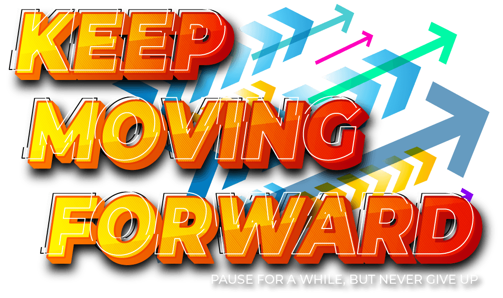
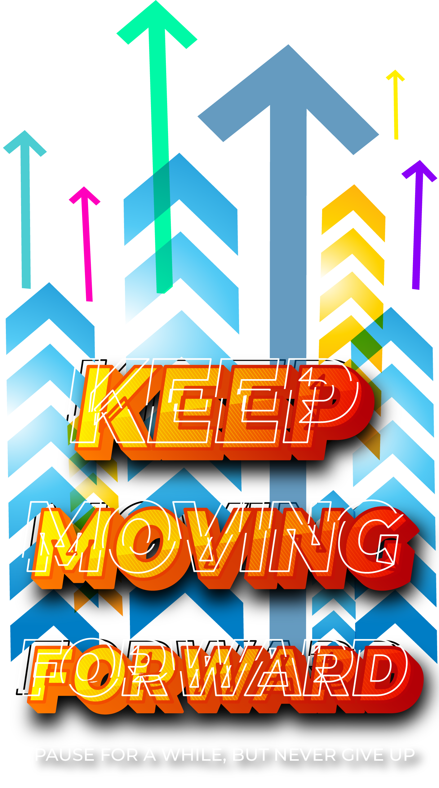
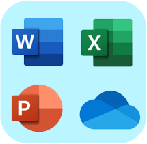
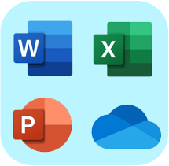
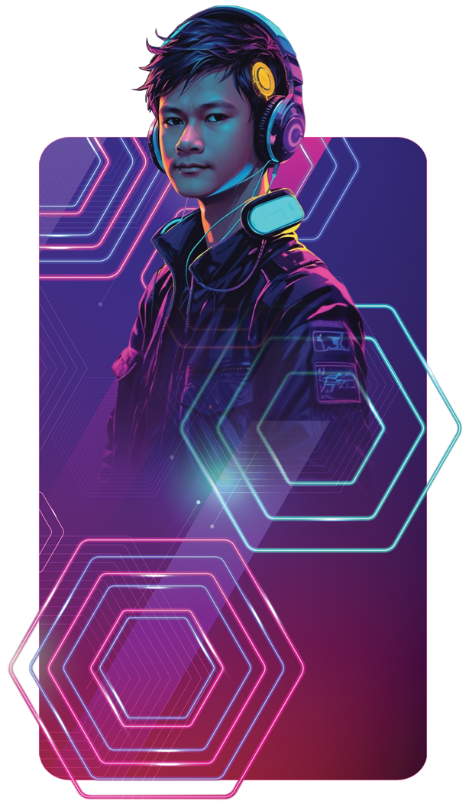

NOMMAETAPAC
-
 
-
 Creating a mockup system for a tailoring shop revolutionized the way designs come to life. The system streamlined the entire process, enhancing efficiency and customer satisfaction.
Creating a mockup system for a tailoring shop revolutionized the way designs come to life. The system streamlined the entire process, enhancing efficiency and customer satisfaction.
 Cloud server setup and management across AWS, GCP, and Azure has equipped me with the expertise to leverage their powerful features, ensuring efficient resource allocation, scalability, and reliable infrastructure management for diverse business needs.
Cloud server setup and management across AWS, GCP, and Azure has equipped me with the expertise to leverage their powerful features, ensuring efficient resource allocation, scalability, and reliable infrastructure management for diverse business needs. -
MySql75%
 Cloud Servers75%
Cloud Servers75% SFTP90%Web AdministratorWith 5+ years of experience in database administration, I specialize in LAMP stack server setup, secure file transfers, and MySQL maintenance using phpMyAdmin, both locally and online, ensuring security and performance.Microsoft Office90%Google Workspace90%Office ToolsProficiency in Microsoft Office and Google Workspace is an essential skill for designers, enabling efficient communication, documentation, and collaboration in professional workflows.
SFTP90%Web AdministratorWith 5+ years of experience in database administration, I specialize in LAMP stack server setup, secure file transfers, and MySQL maintenance using phpMyAdmin, both locally and online, ensuring security and performance.Microsoft Office90%Google Workspace90%Office ToolsProficiency in Microsoft Office and Google Workspace is an essential skill for designers, enabling efficient communication, documentation, and collaboration in professional workflows.
-
Ammon Caro Capate1992-12-11nommaetapac@gmail.comFB: nommaetapacGeneral Santos CityAmmon Caro Capate1992-12-11nommaetapac@gmail.comFB: nommaetapacGeneral Santos City
-


- Home
- Journey
- Skills
- Creator
- Creations